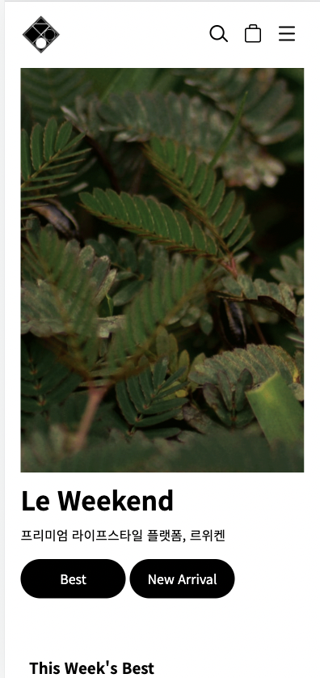
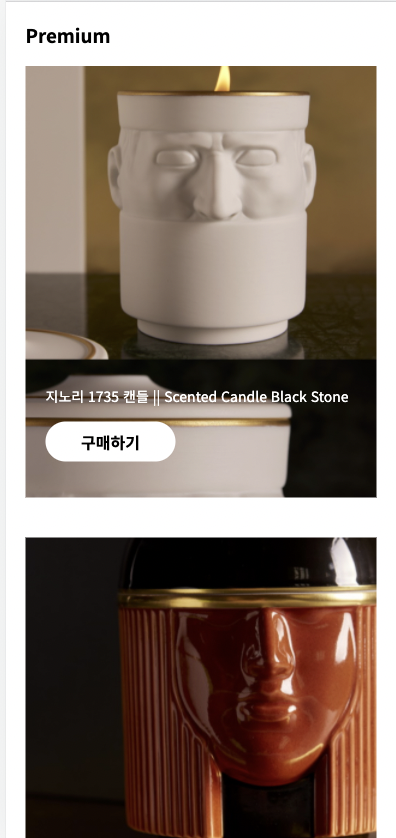
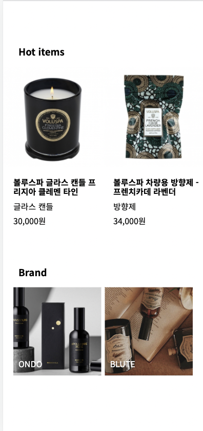

ABOUT
반응형 웹 사이트 제작
디바이스에 제약받지 않고 어디서든 쉽게 사용할 수 있는 웹사이트
기존의 복잡한 디자인이 아닌 보기 편한 가독성과 브랜드의 컨셉에 맞는 디자인 추구



DESIGN
#클래식한 #편안한 #깔끔한
브랜드가 가지고 있는 컨셉을 유지하되, 고객이 더 상품에 집중할 수 있게
깔끔하고 편안한 스타일로 리디자인
color
font 
PUBLISING
#sementic markup #웹표준
#javascript #responsiveWeb #mediaQuery #JSON #Ajax
PC : 1920px | Mobile :768px
크롬 브라우저 최적화
-
1) 반응형 웹페이지 순서
가장 작은 화면인 Mobile버전을 먼저 작성해준뒤 PC버전 작성.
(PC버전의 와이드한 스크린과 많은 정보로 인해 모바일 화면까지 복잡해질 수 있기 때문) -
2) fontello-icon 적용
img를 대신하여 제어하기 편한 폰텔로 아이콘을 연결시켜줌 -
3) box-sizing:border-box;적용
hover를 적용시켰을때 넘치는 컨텐츠의 부자연스러운 움직임으로 인하여 box-sizing:border-box 적용 -
4) 처음으로 jQuery,Ajax, JSON을 이용
제이슨 파일로 데이터를 구성하고 Ajax를 적용시켜 Jquery.ajax() 메서드 이용
REVIEW
반응형 웹은 각 버전에 맞게 퍼블리싱을 적용해줘야 할 부분들이 따로 있어서
헷갈리는 부분이 많았다.
기본 웹 사이트를 구축하는것보다 더 많은부분을 신경써야 했고,
처음으로 jQuery와 json을 이용하여 만들어본 작업이었기떄문에 더 오랜시간을
공들인 작업이었다.